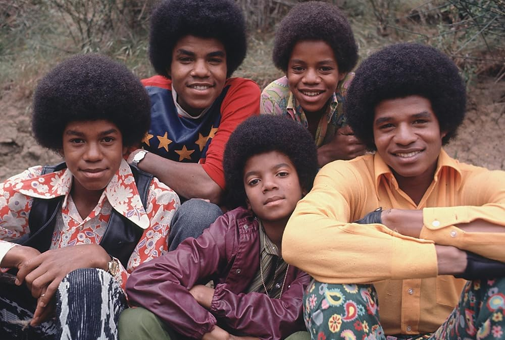

Michael Joseph Jackson foi um cantor, compositor, dançarino e filantropo estadunidense. Apelidado de "Rei do Pop", ele é considerado uma das figuras culturais mais significantes do século XX e um dos maiores artistas da história da música.
O oitavo filho da família Jackson, Michael fez sua estreia profissional aos seis anos de idade em 1964, com seus irmãos mais velhos, Jackie, Tito, Jermaine e Marlon, como membro do grupo musical The Jackson 5.

Michael Jackson lançou 10 álbuns de estúdio em carreira solo durante sua vida, além de inúmeras coletâneas e álbuns póstumos. Sua discografia é marcada por recordes históricos, incluindo Thriller, que permanece como o álbum mais vendido de todos os tempos, com estimativas de 70 a mais de 100 milhões de cópias
| Albuns | Quantidade copias vendidas | Ano |
|---|---|---|
| Thriller | +120 milhões | 1982 |
| bad | 45 milhões | 1987 |
| Dangerous | 50 milhões | 1991 |